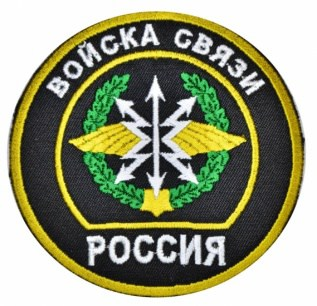
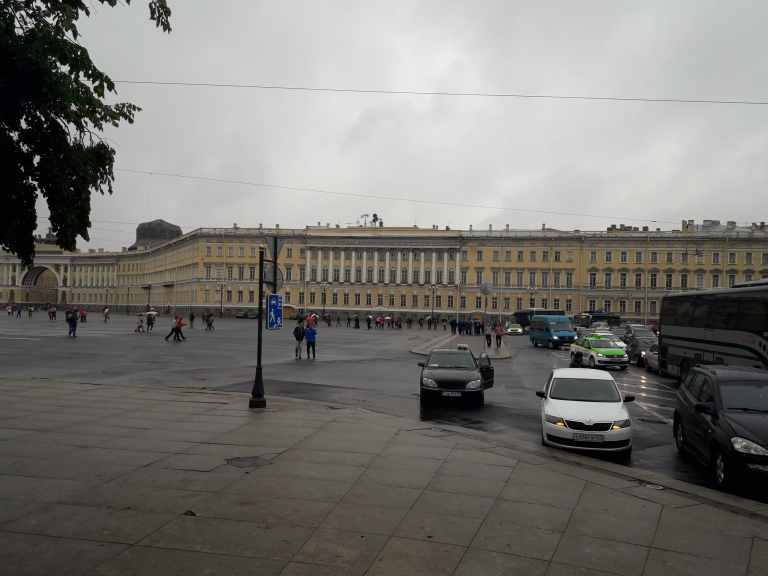
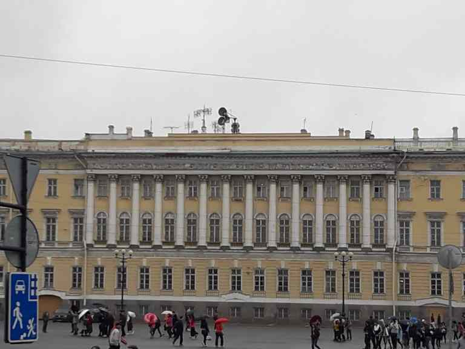
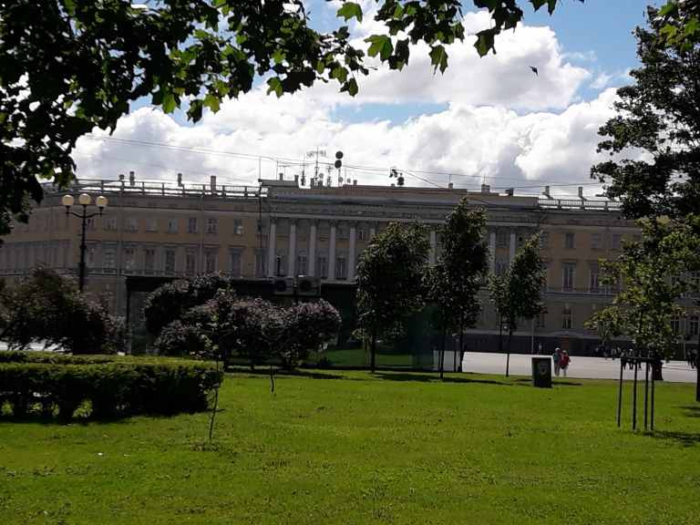
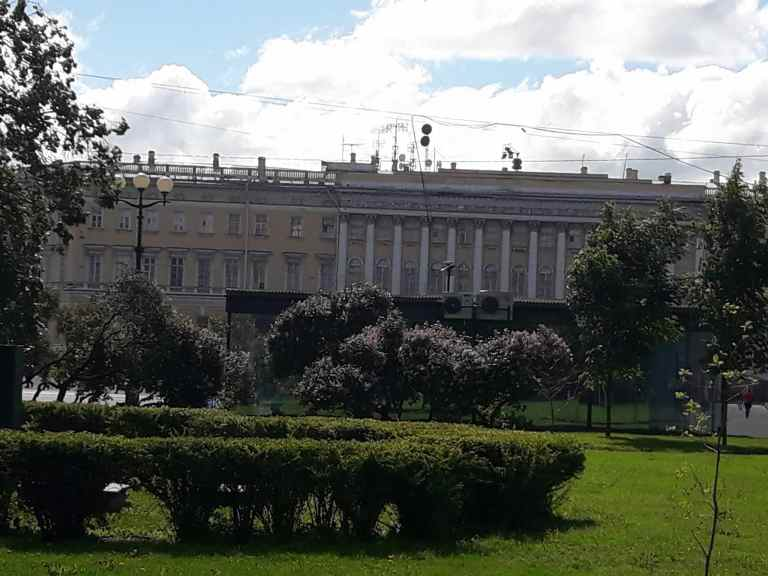
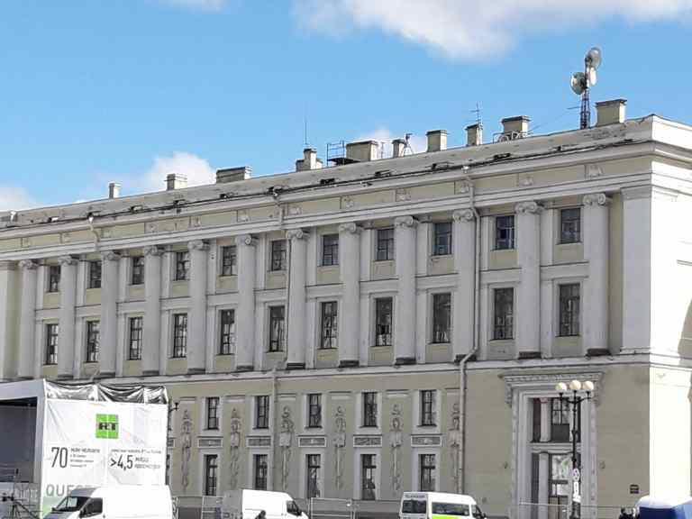
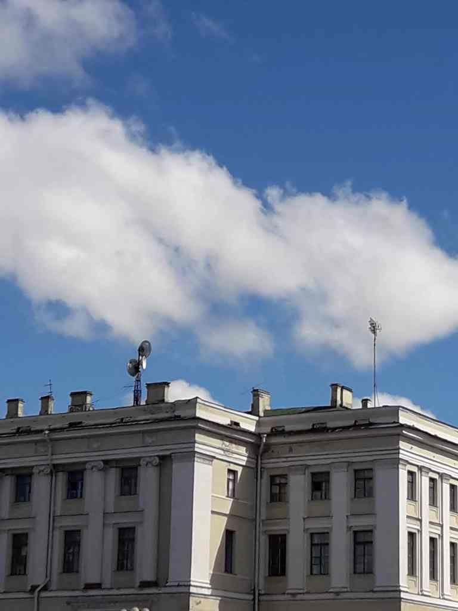
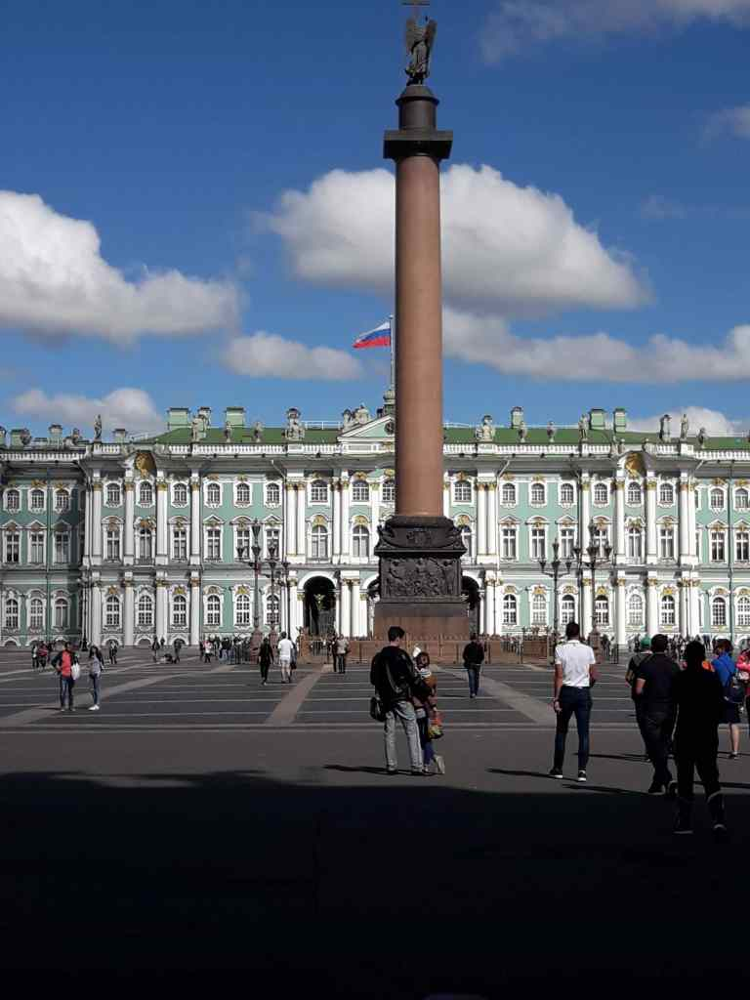

Russian Communication Hubs in Leningrad Region

February 12, 2014 - The Vulcan Incident
An interesting event occurred during UVB-76 (The Buzzer) monitoring. A woman's voice suddenly appeared on top of the buzzer marker transmission:
АЛе, Але, Вулкан? Але, Але, Але, Вулкан? – Hallo, hallo, Vulcan? Hallo, hallo, hallo, Vulcan?
Але – Hallo
… не слышу – I can't hear.
Да я не знаю, чего то только что… – I don't know what it is, it was just…
Господи, куда… А кто тут сегодня? – Oh my god, where is… Who is there today?
Ну у нас все слышно…Я не знаю… - But we can hear it all here… I don't know…
Понятно. Але, и чего делать? Опять заново их вызывать? – Got it. Hallo, and what are we gonna do? Call them again?
Не знаю… – Don't know…
Так, Маша, а какой это канал по-вулкановски? Ok, Masha, I'm standing by here for a while, and what was that channel number in Vulcan classification?
31 2 4 10
О, щас, повиси секундочку, хорошо? еще раз какой, 31 какой? Ok, please be here for a while, ok? Once again, what was the number?
31 2 4 10
4 10? Щас запишу… 4 10? Will write it down…
Але, але Hallo, hallo.
Але Hallo
Слушай, ты посмотри пожалуйста еще.. Я тогда сама на них выйду. А еще посмотри канал… Listen, can u check please… I will call them myself. And can you also check the channel
What Happened: This conversation was never meant to be heard on shortwave—it was a phone conversation heard only because of a channel cross-check mistake. The operator mixed up the contacts and could not hear the buzzer signal, so she called Vulkan. Vulkan responded that everything was working, and the operator eventually recognized her mistake and the conversation ended.
Discovery of Two Buzzer Sites
This incident led to a plausible theory that there are two buzzer transmission sites—one near St. Petersburg and another near Moscow. Since then, one buzzer transmission site was found in Ozernoye-2 (also called Kero Masiv). A person who drove by reported receiving an extra strong signal on their Degen 1103 portable shortwave radio.
The other transmitter is located in Naro-Fominsk near Moscow and is known as the 69th Communications Hub.
Vulkan - The 60th Communication Hub
According to Russian sources, Vulkan is the 60th communication hub located in two places:
Location 1: Ozernoye-2
The location where the St. Petersburg buzzer site was found. No information about the name of the army unit serving there has been found on Russian sites. The VKontakte group has no public pictures from personnel serving there.
Location 2: Palace Square, St. Petersburg
The General Staff building, built in 1819-1829, is located in the very center of St. Petersburg. It currently hosts the headquarters for the Western Military District.
Historical Context: In the past, it was the main command point for the Leningrad Military District. In 2010, the district was united with Moscow and Kaliningrad districts into one Western Military District. The building then became the main office for the united district.
Location Details: In front of the building is the Winter Palace, now a major arts museum. Palace Square is always full of tourists and souvenir stands selling mugs of Putin and Trump, Russian military caps and badges, and even un-Russian items like Fallout 4 cups and fidget spinners. However, what most tourists miss are the clearly visible HF and UHF antennas on the building.
Adjacent Command Facility
Another building in the square, separated from the main building, is the Headquarters of the 6th Army Air Force and Air Defense. It also has antennas and siren installations on its roof. This is the main center where all communications hubs in the Western District are controlled.
Internal Operations
What is inside these buildings is not publicly known. However, personnel who served there sometimes leave pictures from their service on VKontakte social network pages.
Photo Gallery - Vulcan Incident Media






In these pictures, cross-channel systems are visible and shown in use. These systems handle landline and radio communications with various army units. If a channel is plugged into the wrong line, events like the one mentioned above can occur, where phone conversations could be heard over the radio.
Badge for veterans of the Soviet Leningrad Military district 60 communications hub
Other Key Communications Hubs
Ozernoye-2 Buzzer Transmitter Site
The buzzer transmitter site is located in Ozernoye-2. No information about the name of the army unit serving there has been found on Russian sites. The VKontakte group has no public pictures from personnel serving there.
Sudak - Unit 28916 / 52917
Alternative Names: Unit 28916, 132 Territorial Communications Brigade, also known as Sudak
Frequency: Responsible for various signals on 5292 kHz
Location: Agalatovo, near the 60th Communications Hub in Ozernoye-2
Notable Incident (2010): The buzzer had a signal problem with Sudak. A phone conversation to solve the issue was heard on radio. The buzzer was down for 28 minutes while both Vulkan and Sudak tried to reach each other until the issue was resolved.
Russian Military Communications Operations
While Russia continues to introduce more digital technology in its HF communications, these stations and units remain in active use today. All communications on the HF net are carried out in codes and numbers. Clear text messages are severely punished and occur very rarely.
Example of Strict Protocol:
A conscript in a missile unit in Kaliningrad recalled an incident when there was no one at the radio post. While standing guard, he heard coded messages on the radio and thought he should answer them. He responded in clear text and was punished with three days in solitary confinement. The commanding officer was extremely angry about this breach of protocol.
Communications Service in the Russian Army
While communications service in the Russian army is not considered the hardest job compared to other more dangerous unit types, it is responsible work that is technically challenging:
- Coded messages are read twice and must be read correctly
- If a misread occurs, the operator must repeat the message entirely
- Technical staff must maintain sometimes outdated equipment requiring regular maintenance
- This technical expertise is key for successful station operations
Current Activity: Because of the Russian army's communications methods, monitoring their messages is one of the most interesting aspects of military shortwave activity. The Russian army is experiencing a new wave of activity, and these stations will not be silent for a long time to come.